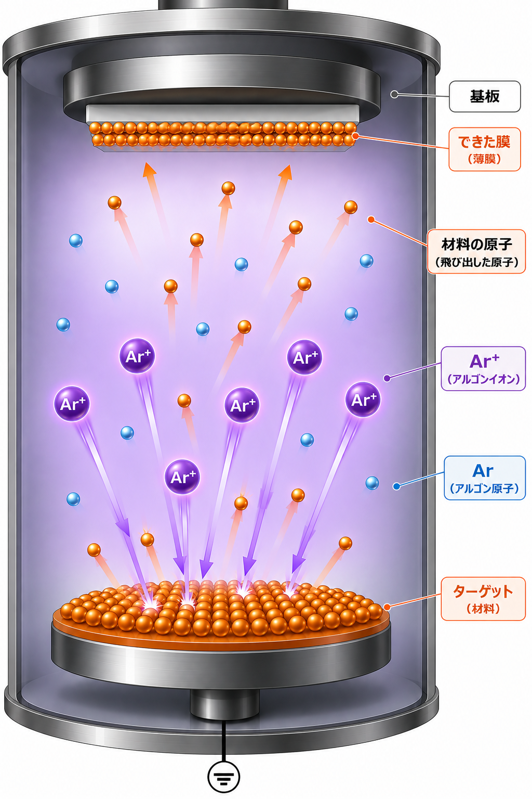
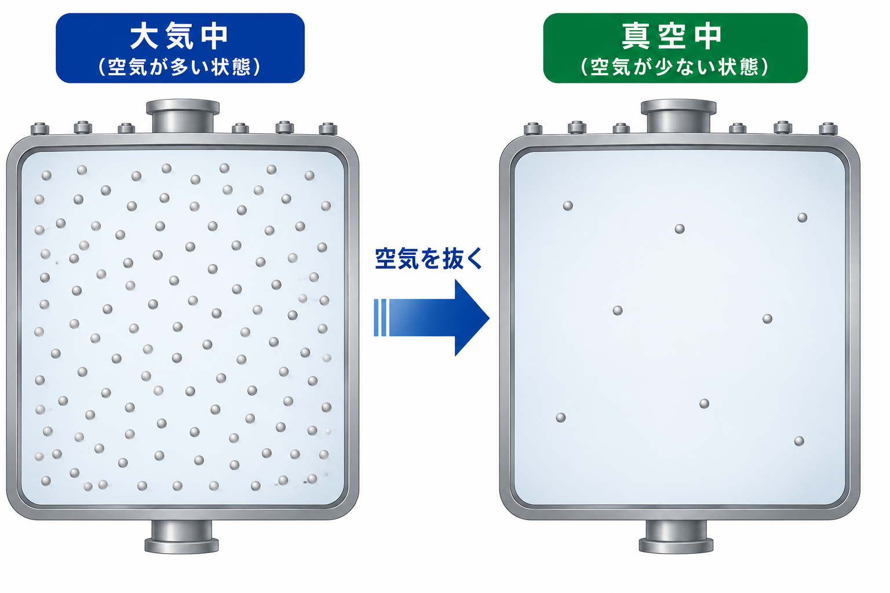

SPUTTERING / 03
どうやって膜をつける？
02で覚えたAr⁺が、実際にどう動いて膜をつくるのか見てみましょう。
まず、Ar⁺をつくる
アルゴンガスに電気をかけると
Ar→
電子（−）が1個外れるAr⁺
電子（−）が1個外れるAr⁺
アルゴンガスを入れて電気をかけると、Arから電子（−）が外れてAr⁺ができます。
※ 実際には、電子の衝突などによってArがイオンになります。
できたAr⁺がターゲットへ向かう

※ 粒子の大きさや数、動きを分かりやすく表した模式図です。
01
向かう
電源を使ってターゲット側が－になるように電圧をかけると、＋のAr⁺が引き寄せられます。
02
ぶつかる
Ar⁺がターゲットに衝突します。
03
飛び出す
衝突によって、材料の原子が飛び出します。
04
基板へ向かう
飛び出した材料の原子の一部が、反対側の基板へ向かいます。
05
膜になる
材料の原子が基板に付き、少しずつ薄膜になります。
Ar → Ar⁺ → ターゲットにぶつかる → 材料の原子が飛び出す → 基板について膜になる。
これが、スパッタリングで膜ができる基本の流れです。
これが、スパッタリングで膜ができる基本の流れです。
スパッタリングは真空中で行います
装置の中の空気を抜いて、空気などの気体が少ない状態にします。

真空とは、何もない状態ではなく、空気などの気体がとても少ない状態です。
真空にすると空気の粒子が少なくなり、飛び出した材料の原子が途中でぶつかりにくく、基板まで届きやすくなります。
真空にすると空気の粒子が少なくなり、飛び出した材料の原子が途中でぶつかりにくく、基板まで届きやすくなります。